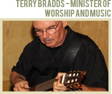
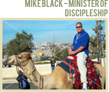

MEET OUR STAFF
Mark Atteberry Sr. Minister
 I grew up in southern Illinois and attended St. Louis Christian College, graduating in 1977. I came to Poinciana Christian Church in 1989 when the church had a Sunday Morning attendance of about 65. Marilyn, my wife since 1975, is the church's office administrator and also serves as my personal assistant in author related matters. We have one daughter, Michelle, and two beautiful granddaughters. I have written many books and enjoy traveling and speaking as my schedule allows. At home, I am likely to be reading, writing, watching sports, or listening to music. Many would say my ministry at PCC has been a long one, but the years have flown by, mostly because we have stayed so busy and had such fun. Each year seems to bring new challenges and new breakthroughs. Serving at PCC has been a wonderful adventure.
I grew up in southern Illinois and attended St. Louis Christian College, graduating in 1977. I came to Poinciana Christian Church in 1989 when the church had a Sunday Morning attendance of about 65. Marilyn, my wife since 1975, is the church's office administrator and also serves as my personal assistant in author related matters. We have one daughter, Michelle, and two beautiful granddaughters. I have written many books and enjoy traveling and speaking as my schedule allows. At home, I am likely to be reading, writing, watching sports, or listening to music. Many would say my ministry at PCC has been a long one, but the years have flown by, mostly because we have stayed so busy and had such fun. Each year seems to bring new challenges and new breakthroughs. Serving at PCC has been a wonderful adventure.
Mark Atteberry Sr. Minister
I was born in Ohio and grew up in the Xenia area. I started playing guitar at the age of five. I made my living as a professional guitarist until I was 30 years old. I became a Christian at the age of 25. The desire to know Christ and His Word led me to attend Cincinnati Bible College at the age of 30. I graduated with a Bachelor's Degree in Bible and education, and was in the preaching ministry for 22 years. My wife Nancy and I have two sons, three grandsons and one granddaughter. Both of our sons also have degrees from CBC. I love spending time with my children and grandchildren, reading good books, writing and communicating through music. I have been the worship leader at PCC since January of 2001. I enjoy the peaceful atmosphere of the congregation. God is good!
Mark Atteberry Sr. Minister
I was born in Manhattan, NY. My dad was a career Foreign Service Officer so I grew up overseas, mostly in South America. I graduated from The University of Maryland in 1978 with a B.S. degree in Special and Elementary Education. In 1982 I graduated from Central Florida Bible College with a B.S. degree in Christian Education. I have served as the part-time Director of Children’s Ministry at PCC since 1994. My husband, Nils, and I have been married since 1983. We have two sons, Nils II and Brock. I love to spend time with my God, my family and my friends. I also love to read, listen to music, and delight in the awesome beauty of God’s creation. I’ve been a member at PCC since 1991. PCC is a family to me.
Mark Atteberry Sr. Minister
I was born in Indiana and grew up in the Midwest, in particular, Indiana and Illinois. I am currently attending Florida Christian College to complete a BA in Preaching. I have worked in a couple of different ministry settings that included Christian camping and located ministry. Hanging Rock Christian Assembly was my home and workplace from 1995 until 2003. I then worked in the local church as a Youth Minister for over four years before moving to Florida in 2007. I have been married to my wife Marla since 1997 and we have two beautiful daughters, Molly and Alanna. My family and I began attending PCC in the fall of 2007 and we consider PCC as family. I completed an internship with the church in the spring of 2010 and then became part of the staff later that year. I look forward to seeing what God has in store for the family of PCC in the upcoming years.
Mark Atteberry Sr. Minister
I was born in Evansville, Indiana and grew up in a small town, Albion, Illinois. I attended junior college and St. Louis Christian College. My husband, Mark, and I married in 1975. We have a daughter and two granddaughters. We moved to Poinciana in 1989. I was working in a secular job when the PCC elders approached me about becoming the church secretary. Since 1999, I have been blessed to use my abilities for the church and the Lord. I enjoy reading and spending time with my family. Although PCC has undergone many changes through the years, it still feels like home and family.